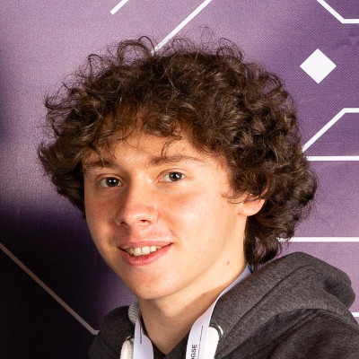

CLASH
The Cambridge Logical Structures Hub
Our research group applies logical methods to advance the research frontier across a wide range of areas, including programming languages, proof assistants, networks, algorithms, and quantum computation, as well as the foundations of computer science and mathematics. We employ a variety of techniques, including type theory, category theory, mathematical logic and model theory.
Updates
- March 2023. We will be visited from the 20th to the 25th of March by Amar Hadzihasanovic from Tallinn University.
- January 2023. Welcome to new PhD students Yulong Huang and Rowan Poklewski-Koziell.
- January 2023. We will be visited from the 16th of January by Simona Paoli from University of Aberdeen, and Joshua Wrigley from University of Insubria.
- November 2022. Welcome to Meven Lennon-Bertrand who is joining us as a postdoctoral researcher.
- October 2022. Welcome to Anthony Borg who is joining us as a postdoctoral researcher, and to Niamh Cuffe who will be visiting us.
- October 2022. Welcome to José Paiva-Miranda-De-Siqueira who will be visiting us from DPMMS.
- October 2022. We will be visited from the 10th of October by Taichi Uemura from Stockholm University.
- October 2022. Welcome to new PhD students Rini Banerjee, Sanjiv Ranchod, Chiara Sarti and Haiqi Wu.
- October 2022. We will be visited for 6 weeks by Elena di Lavore from Tallinn University.
- September 2022. 1-week visit by Steve Awodey from Carnegie Mellon University.
- August 2022. Welcome to Manuel Araujo who is joining us as a postdoctoral researcher.
- May 2022. Welcome to Zeinab Galal who is visiting from the University of Leeds, and Farzad Jafarrahmani who is visiting from the University of Paris.
- April 2022. Welcome to Marius Henry and Werner Merian who are visiting over the summer.
- April 2022. Welcome to Ambroise Lafont who has started as a postdoctoral researcher, working with Neel Krishnaswami.
- January 2022. Welcome to Mukesh Tiwari who has started as a postdoctoral researcher, working with Tim Griffin.
- November 2021. Simon Forest is visiting for 3 weeks from Aix-Marseille Université.
- November 2021. 1-week visit by Jon Sterling from Aarhus.
- October 2021. Peter LeFanu Lumsdaine has joined us as a long-term visitor.
- October 2021. Welcome to new PhD students David Berry and Ioannis Eleftheriadis.
- July 2021. We hosted Applied Category Theory 2021 as a hybrid event, with both physical and online participation.
Activities
We organize a wide range of activities, which are open to all to attend.
- The Logic and Semantics Seminar takes place on most Fridays during term time at 2pm.
- The informal series Logic and Semantics for Dummies (LSD) features introductory talks by PhD students, and is aimed as PhD and Masters students.
- A regular Theory Tea meeting takes place at 4pm on Thursdays, in the common room on the first floor.
Teaching
We teach a wide range of courses on logical techniques in computer science, including the following:
- Category Theory (Part II CST 75%)
- Category Theory (MPhil ACS, Part III)
- Computation Theory (Part IB CST 50%, Part IB CST 75%)
- Denotational Semantics (Part II CST 50%, Part II CST 75%)
- Semantics of Programming Languages (Part IB CST 50%, Part IB CST 75%)
- Types (Part II CST 50%, Part II CST 75%)
- Advanced Topics in Category Theory (Part III)
Faculty


Researchers

PhD Students


Visitors

Past Members

Past Visitors


Werner Merian
Werner Merian
Updating this page
To update this page, please contact Chiara Sarti.